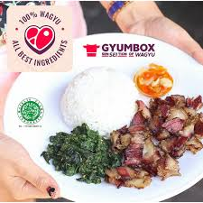

-
Gyumbox
Gyumbox

Gyumbox adalah restoran yang mengusung konsep Indonesian Fusion Food, menggabungkan cita rasa tradisional Indonesia dengan sentuhan modern. Dikenal dengan menu andalannya seperti Smoked Wagyu, Crunchy Smoked Chicken, dan Gyumbox Cube, Gyumbox telah berkembang pesat sejak membuka gerai pertamanya di Kota Baru Parahyangan, Bandung.
Konsep dan Menu Unggulan :
Gyumbox menawarkan hidangan berbasis daging asap dengan teknik pengasapan tradisional Kupang yang dipadukan dengan metode modern, menghasilkan rasa smoky yang khas. Beberapa menu favorit meliputi:
- Smoked Wagyu: Daging wagyu asap yang juicy dengan aroma smoky yang kuat.
- Crunchy Smoked Chicken: Ayam asap dengan tekstur renyah.
- Gyumbox Cube: Potongan daging sapi berbentuk kubus yang dimasak dengan sempurna.
Setiap hidangan biasanya disajikan dengan nasi, sayuran, dan pilihan sambal seperti Xambal Kencur, Xambal Kluwak, dan Xambal Bawang. -
Lokasi dan Jam Operasional
Gyumbox memiliki beberapa cabang di Indonesia, termasuk:
- Bandung: Kota Baru Parahyangan, Jl. Bujanggamanik Ruko Pancawarna No.9
- Tangerang: Bintaro Jaya Xchange Mall 2, Lantai Upper Ground.
- Jakarta: Lippo Mall Puri (St. Moritz Mall).
- Jam operasional umumnya dari pukul 10:00 hingga 22:00 setiap hari. -
Fasilitas dan Pelayanan

Gyumbox menyediakan fasilitas seperti Wi-Fi, area indoor dan semi-outdoor, serta layanan pesan antar melalui platform seperti GoFood, GrabFood, dan ShopeeFood. Metode pembayaran yang diterima meliputi tunai, kartu debit, dan QRIS